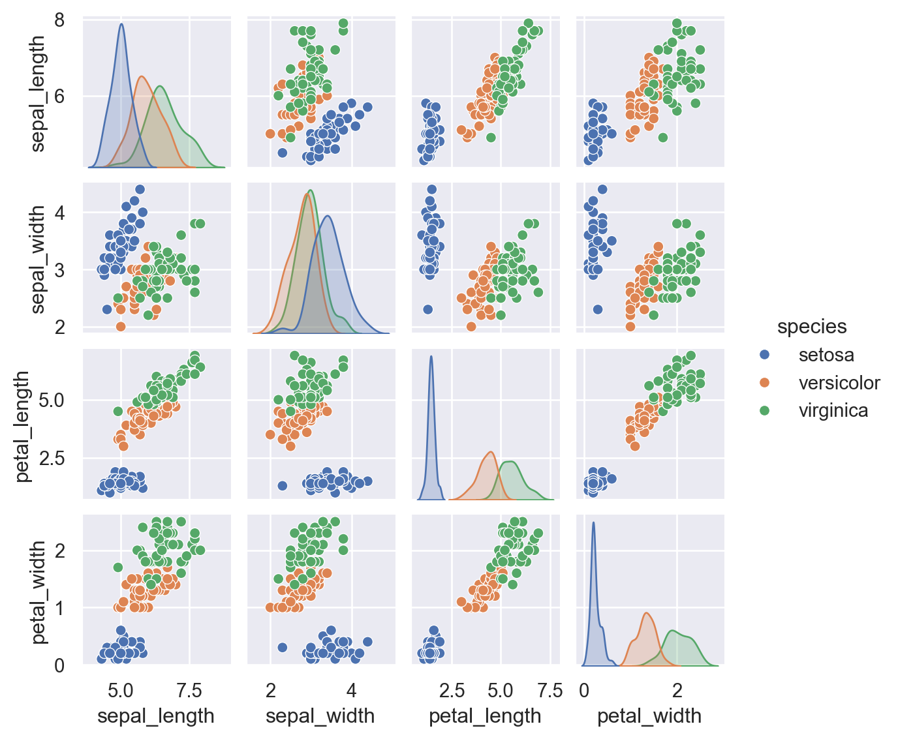
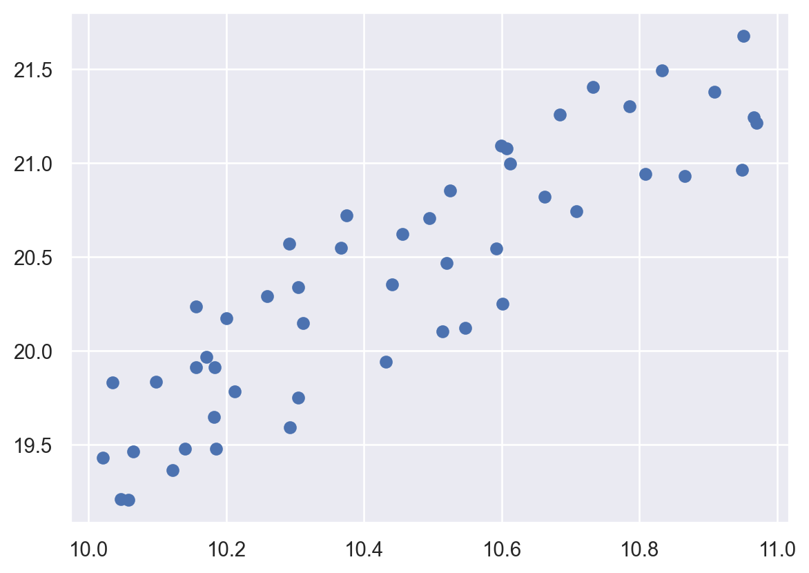
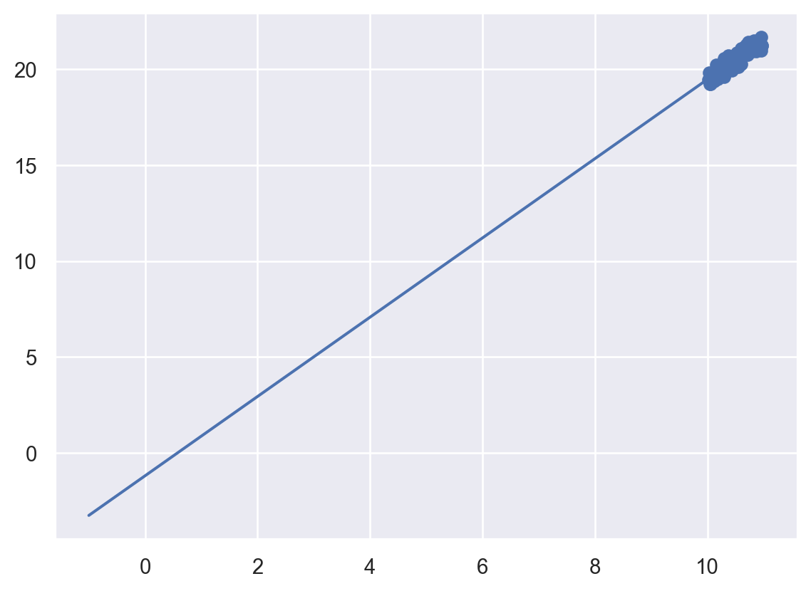

Machine Learning se trata de crear models desde los datos: por esta razón es necesario entender como se representa la data en una computadora. En nuestro caso particular con Scikit-Learn la manera de tratar la data es como una tabla.
Datos como tabla
Una tabla basica es un arreglo bi-dimensional de datos, en donde cada fila representa un elemento individual del conjunto de datos, y cada columna representa cantidades realacionadas con cada uno de estos elementos.
Por ejemplo la ya conocidada base iris
Código
import seaborn as sbiris=sb.load_dataset('iris')iris.head()
sepal_length
sepal_width
petal_length
petal_width
species
0
5.1
3.5
1.4
0.2
setosa
1
4.9
3.0
1.4
0.2
setosa
2
4.7
3.2
1.3
0.2
setosa
3
4.6
3.1
1.5
0.2
setosa
4
5.0
3.6
1.4
0.2
setosa
Aquí, cada fila de la data se refiere a la observación de una flor, y el numero de filas es el total de flores observadas.
Matriz de caracteristicas (Features matrix)
Esta tabla contienene la información caracteeristica del conjunto de datos en nuestro ejemplo contiene información de flores. Matemáticamente estas caracteristicas pasan a representar las variables independientes de nuestro conjunto de datos generalmente denotado por \(X\)
Objetivo (Target Array)
Es un arraglo que matemáticamente representa la variable dependiente generalmente notada por \(y\)
C:\Users\JXBS\AppData\Local\Programs\Python\Python312\Lib\site-packages\seaborn\axisgrid.py:2100: UserWarning: The `size` parameter has been renamed to `height`; please update your code.
warnings.warn(msg, UserWarning)

Para usar los datos en Scikit-Learn, tenemos que extraer los matriz \(X\) y el objetivo \(y\)
La API de Scikit-Learn esta diseñada con los siguientes principios en mente
Coherencia.- Todos los objetos comparten unaa interfaz común extraida de un conunto limitado de métodos, con documentación consistente.
Inspección Todos los valores de parámetros especificados se exponen como atributos públicos. Jerarquía de objetos limitada Sólo los algoritmos están representados por clases de Python; los conjuntos de datos se representan en formatos estándar (matrices NumPy, Pandas DataFrames, matrices dispersas de SciPy) y los nombres de los parámetros utilizan cadenas estándar de Python.
Composición Muchas tareas de aprendizaje automático se pueden expresar como secuencias de algoritmos más fundamentales, y ScikitLearn hace uso de esto siempre que es posible.
Valores predeterminados sensatos Cuando los modelos requieren parámetros especificados por el usuario, la biblioteca define un valor predeterminado apropiado.
Básicos de la API
Por lo general, los pasos para usar la API del estimador Scikit-Learn son los siguientes (repasaremos algunos ejemplos detallados en las secciones siguientes):
Elija una clase de modelo importando la clase de estimador adecuada de ScikitLearn.
Elija los hiperparámetros del modelo creando una instancia de esta clase con los valores deseados.
Organice los datos en una matriz de características y un vector objetivo siguiendo la discusión anterior.
Ajuste el modelo a sus datos llamando al método fit() de la instancia del modelo.
Aplique el modelo a nuevos datos:
• Para el aprendizaje supervisado, a menudo predecimos etiquetas para datos desconocidos usando el método predict().
• Para el aprendizaje no supervisado, a menudo transformamos o inferimos propiedades de los datos utilizando el método transform() o predict().
Ejemplo De Aprendizaje Supervisado: Regresión Lineal Simple
<matplotlib.collections.PathCollection at 0x1e7115f3c20>

Escojemos el modelo
Código
from sklearn.linear_model import LinearRegression
Escogemos los hiperparametros
Código
model=LinearRegression(fit_intercept=True)model
LinearRegression()
In a Jupyter environment, please rerun this cell to show the HTML representation or trust the notebook. On GitHub, the HTML representation is unable to render, please try loading this page with nbviewer.org.
LinearRegression()
Organizando los datos en variables independientes y variable dependiente
Código
X=x[:,np.newaxis]X.shape
(50, 1)
Ajustando el modelo
Código
model.fit(X,y)
LinearRegression()
In a Jupyter environment, please rerun this cell to show the HTML representation or trust the notebook. On GitHub, the HTML representation is unable to render, please try loading this page with nbviewer.org.
LinearRegression()
Código
model.coef_
array([2.06607665])
Código
model.intercept_
-1.1957940680607742
Predicciendo data desconocida
Código
xfit=np.linspace(-1,11)
Código
Xfit=xfit[:,np.newaxis]yfit=model.predict(Xfit)
Código
plt.scatter(x,y)plt.plot(xfit,yfit)

Ejecutar el código
---title: "Hiperparametros y Modelos de Validación"author: "Joel Burbano"date: 2023-12-17categories: ['Python','Machine Learning']---## Representación de la data en Scikit-LearnMachine Learning se trata de crear models desde los datos: por esta razón es necesario entender como se representa la data en una computadora. En nuestro caso particular con Scikit-Learn la manera de tratar la data es como una tabla.### Datos como tablaUna tabla basica es un arreglo bi-dimensional de datos, en donde cada fila representa un elemento individual del conjunto de datos, y cada columna representa cantidades realacionadas con cada uno de estos elementos.Por ejemplo la ya conocidada base `iris````{python}import seaborn as sbiris=sb.load_dataset('iris')iris.head()```Aquí, cada fila de la data se refiere a la observación de una flor, y el numero de filas es el total de flores observadas.## Matriz de caracteristicas (Features matrix)Esta tabla contienene la información caracteeristica del conjunto de datos en nuestro ejemplo contiene información de flores. Matemáticamente estas caracteristicas pasan a representar las variables independientes de nuestro conjunto de datos generalmente denotado por $X$## Objetivo (Target Array)Es un arraglo que matemáticamente representa la variable dependiente generalmente notada por $y$```{python}import matplotlib.pyplot as plt``````{python}#plt.figure(figsize=(12,8))sb.set()sb.pairplot(iris,hue='species',size=1.5)```Para usar los datos en Scikit-Learn, tenemos que extraer los matriz $X$ y el objetivo $y$```{python}X_iris=iris.drop('species',axis=1)print(X_iris.shape)y_iris=iris['species']print(y_iris.shape)```## Scikit-Learn's API estimadorLa API de Scikit-Learn esta diseñada con los siguientes principios en mente- Coherencia.- Todos los objetos comparten unaa interfaz común extraida de un conunto limitado de métodos, con documentación consistente.- Inspección Todos los valores de parámetros especificados se exponen como atributos públicos. Jerarquía de objetos limitada Sólo los algoritmos están representados por clases de Python; los conjuntos de datos se representan en formatos estándar (matrices NumPy, Pandas DataFrames, matrices dispersas de SciPy) y los nombres de los parámetros utilizan cadenas estándar de Python.- Composición Muchas tareas de aprendizaje automático se pueden expresar como secuencias de algoritmos más fundamentales, y ScikitLearn hace uso de esto siempre que es posible.- Valores predeterminados sensatos Cuando los modelos requieren parámetros especificados por el usuario, la biblioteca define un valor predeterminado apropiado.## Básicos de la APIPor lo general, los pasos para usar la API del estimador Scikit-Learn son los siguientes (repasaremos algunos ejemplos detallados en las secciones siguientes):1. Elija una clase de modelo importando la clase de estimador adecuada de ScikitLearn.2. Elija los hiperparámetros del modelo creando una instancia de esta clase con los valores deseados.3. Organice los datos en una matriz de características y un vector objetivo siguiendo la discusión anterior.4. Ajuste el modelo a sus datos llamando al método fit() de la instancia del modelo.5. Aplique el modelo a nuevos datos:• Para el aprendizaje supervisado, a menudo predecimos etiquetas para datos desconocidos usando el método predict().• Para el aprendizaje no supervisado, a menudo transformamos o inferimos propiedades de los datos utilizando el método transform() o predict().## Ejemplo De Aprendizaje Supervisado: Regresión Lineal Simple```{python}import numpy as np``````{python}rng=np.random.RandomState(42)x=10+rng.rand(50)y=2*x-1+rng.rand(50)plt.scatter(x,y)```1. Escojemos el modelo```{python}from sklearn.linear_model import LinearRegression```2. Escogemos los hiperparametros```{python}model=LinearRegression(fit_intercept=True)model```3. Organizando los datos en variables independientes y variable dependiente```{python}X=x[:,np.newaxis]X.shape```4. Ajustando el modelo```{python}model.fit(X,y)``````{python}model.coef_``````{python}model.intercept_```5. Predicciendo data desconocida```{python}xfit=np.linspace(-1,11)``````{python}Xfit=xfit[:,np.newaxis]yfit=model.predict(Xfit)``````{python}plt.scatter(x,y)plt.plot(xfit,yfit)```